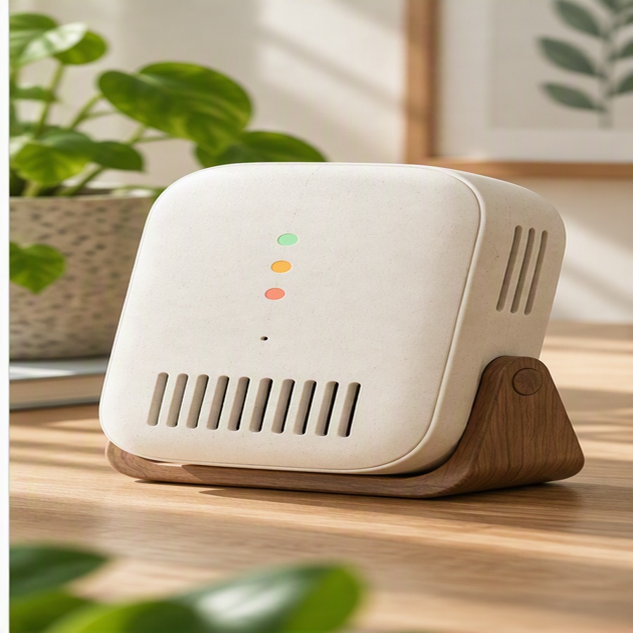

Recommended use
General observation in dry residential, learning, studio, and office spaces.
Practical information about intended use, placement, care, storage, and expected service life.

DriftSense H4 is intended for desks, shelves, study areas, and shared rooms where a calm indication of changing indoor comfort is useful.
Place the device away from direct sunlight, cooking steam, open windows, and concentrated airflow. Clean the exterior with a dry soft cloth.
General observation in dry residential, learning, studio, and office spaces.
Eight years under ordinary indoor use and maintenance.
Store disconnected, dry, and protected from dust.
Not a safety alarm, medical device, or regulatory instrument.